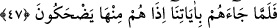
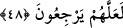

bir kavimdir.
55. Böylece bizi öfkelendirince onlardan intikam aldık, hepsini suda boğduk.
56. Onları, sonradan gelenlerin geçmişi ve bir ibret örneği kıldık.
“Andolsun biz Mûsâ’yı da âyetlerimizle” peygamberliğinin doğruluğuna delâlet eden
dokuz mûcizeyle[172] “Firavun’a ve ileri gelen adamlarına”; yani kavminin ileri gelen
eşraf ve ulularına “göndermiştik de Mûsâ” onlara “ben âlemlerin Rabbinin elçisiyim,
demişti.”
Kavmin ileri gelen eşraf ve ulularına gönderilen aynı zamanda diğer ayak takımına da
gönderilmiş demektir. Çünkü bu kesim, ileri gelen eşrâf tâifesine tâbidirler.
47. Onlara âyetlerimizi getirince, bunlara gülüvermişlerdi.
Mûsâ (a.s.) saâdete ermeleri, inkâr ve kötülüklerden vazgeçmeleri ve faydalanmaları
için “onlara âyetlerimizi getirince” onlar, âyetleri daha ilk gördüklerinde hiç
düşünmeden yalanlamışlardı. Haksızca ve böbürlenerek “bunlara gülüvermişlerdi.”
Âyetlere karşı zâlimâne ve mütekebbir tavırlarından dolayı bunların bir büyü ve göz
boyama olduğunu söylemişlerdi.
48. Onlara gösterdiğimiz her bir mu’cize diğerinden daha büyüktü. Doğru yola
dönsünler diye onları azâba uğrattık.
“Onlara gösterdiğimiz her mu’cize diğerinden” kızkardeşinden “daha büyüktü.”
Yani inkârı durumunda azâbı da büyük olması için, bir sonraki mu’cize bir öncekinden
daha büyüktü. “Âyet” kelimesi müennes olunca bundan “üht”/kız kardeş olarak tâbir
edilmiştir. Sıhhat, doğruluk ve âyetlerin her biri diğerinin bir benzeri, arkadaşı ve dostu
olması, sonuçta “âyet” sayılma bakımından müşterek oldukları için bir önceki ve bir
sonraki âyetler “kız kardeşler” olarak isimlendirilmişledir.
Keşfu’l-esrâr’da şöyle denilmektedir: Bu konuda Farslılar (zâhidler) derler ki; hepsi
de birbirinden daha iyi, daha güzel ve daha büyüktür.
Bu ifâdeden maksad, bu âyetlerin her birini daha fazlası olmayacak şekilde bir
büyüklükle nitelemektir. Bu, kinâye şekillerinden biridir. Fakir (Bursevî) der ki: